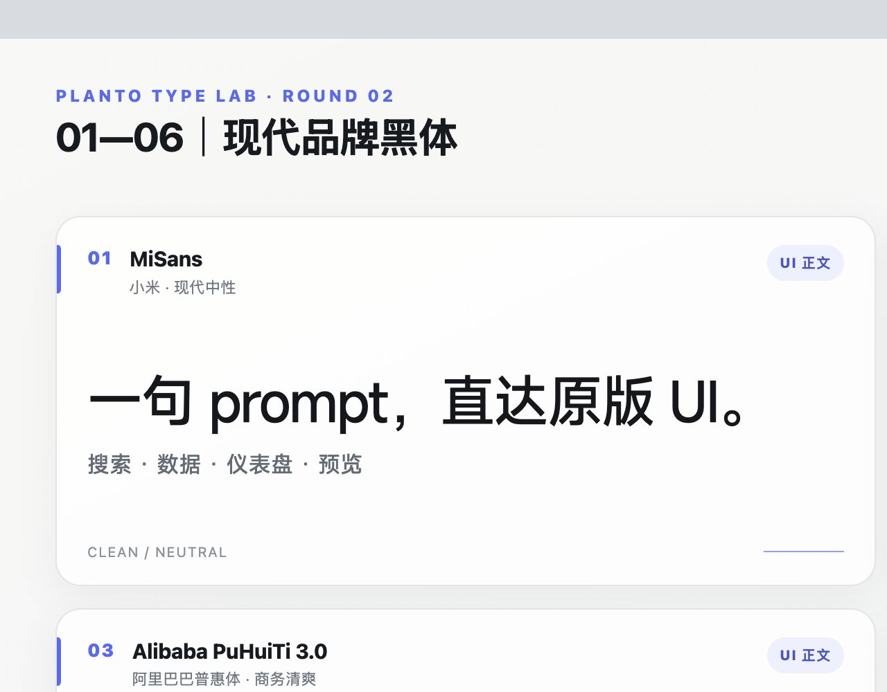
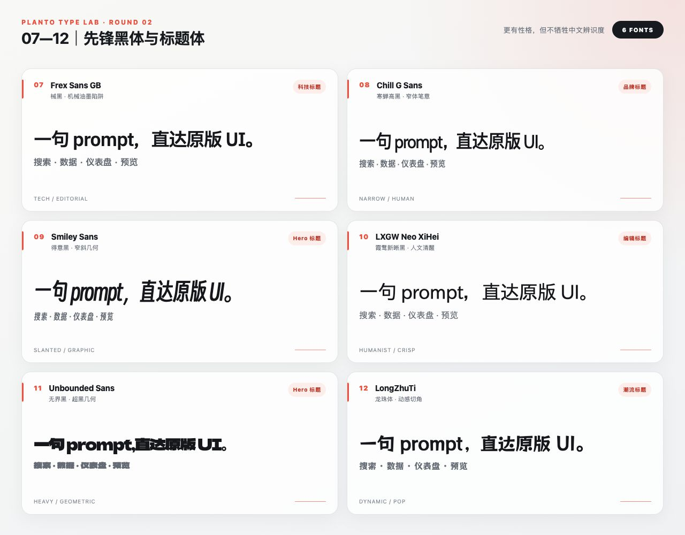
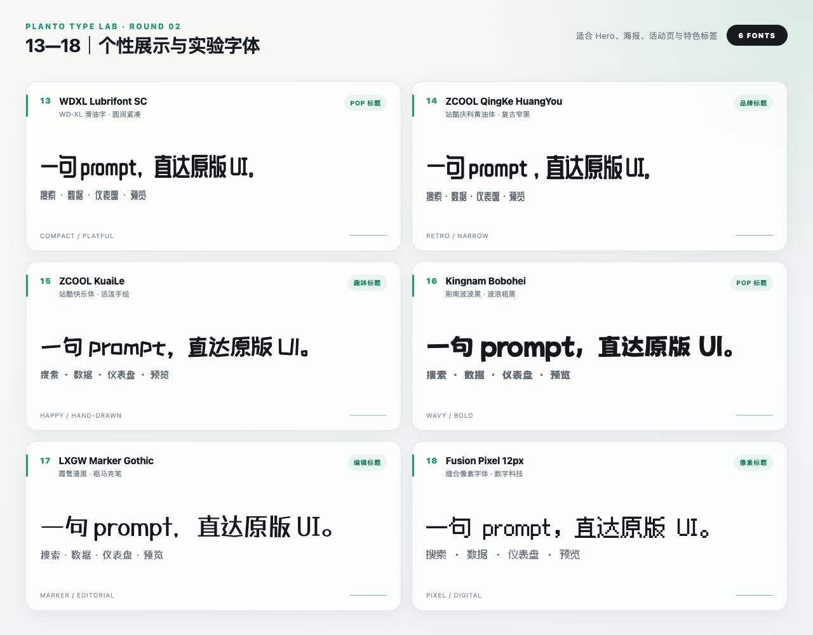
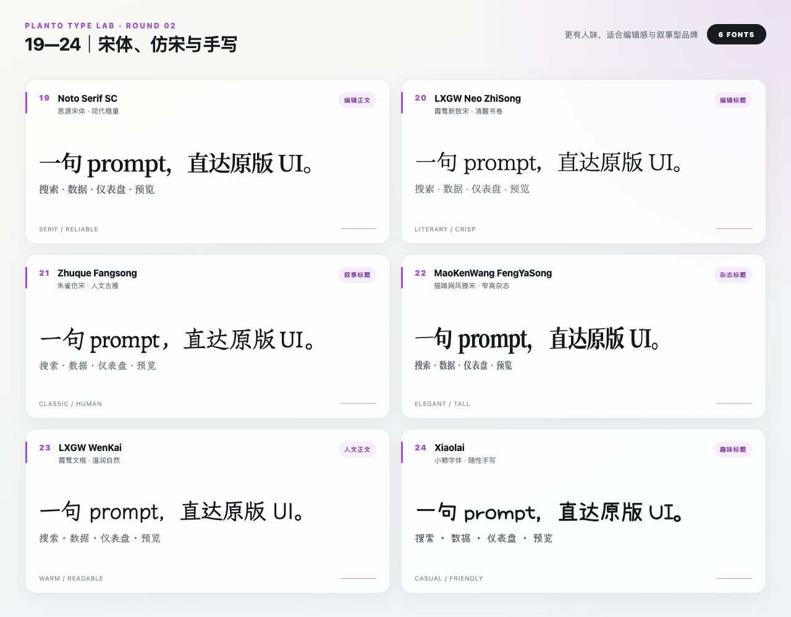

INSTALL
两行装进 Codex
codex plugin marketplace add reymondmeking-dot/nvwa-Chinese-character-open
codex plugin add chinese-character-open@nvwa-chinese-character-openFONT BOARD
24 款，一眼挑完
每张图使用同一套产品文案和编号，先看气质，再用插件生成你的真实文案预览。




LICENSE FIRST
免费使用，不等于可以重新分发。
MiSans、HarmonyOS Sans SC、阿里巴巴普惠体 3.0、阿里妈妈方圆体 VF 只保留预览与官方链接。其余 20 款附原始文件、上游协议和校验哈希。
查看 24 款完整授权表 →